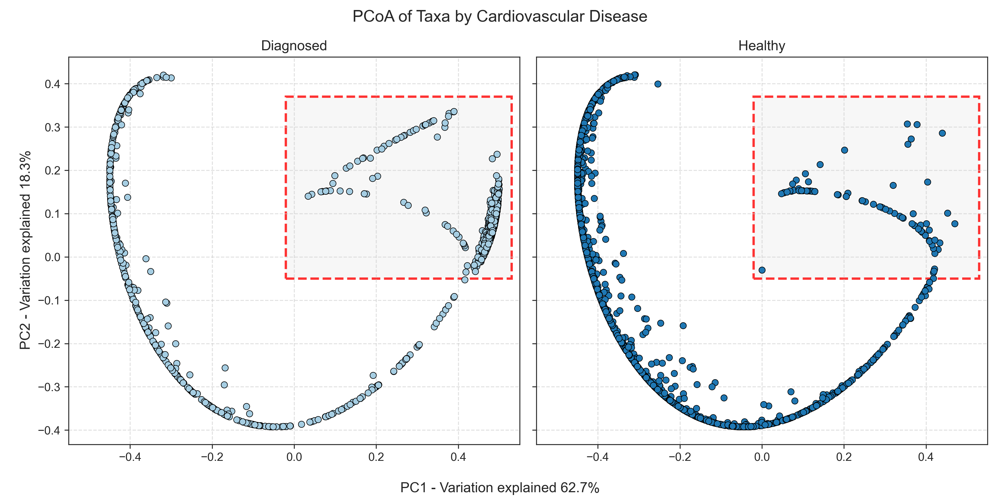
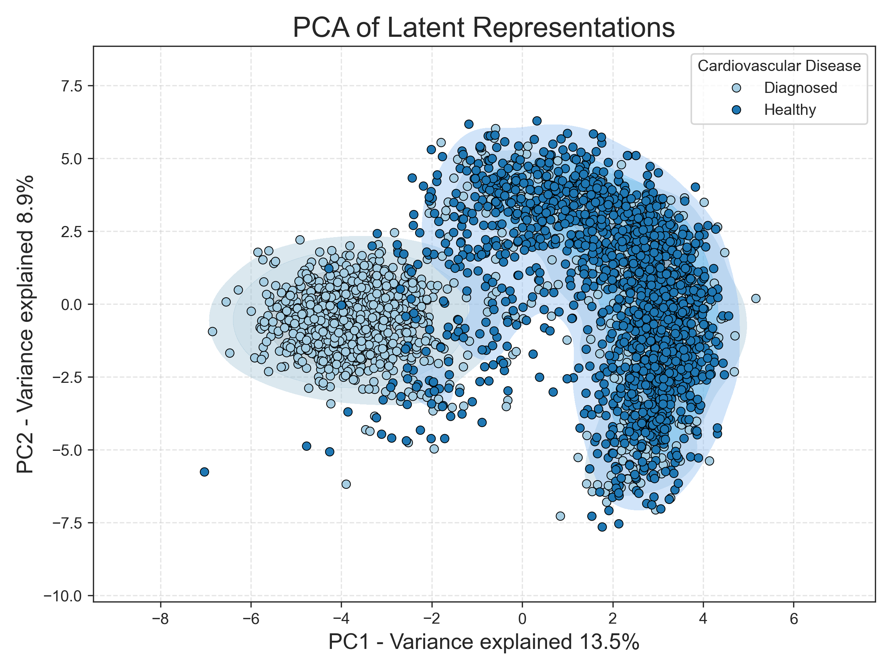

Probability Path
Flow matching
Flow matching description here flow matching description here flow matching description here flow matching description here flow matching description here flow matching description here
True Flow

Learned Flow

Denoising diffusion model
Denoising diffusion description here denoising diffusion description here denoising diffusion description here denoising diffusion description here denoising diffusion description here.
True Diffusion

Learned Diffusion

Generative Adversarial Network

This is the description for GAN
Variational AutoEncoder

This is the description for the Variational AutoEncoder (VAE).